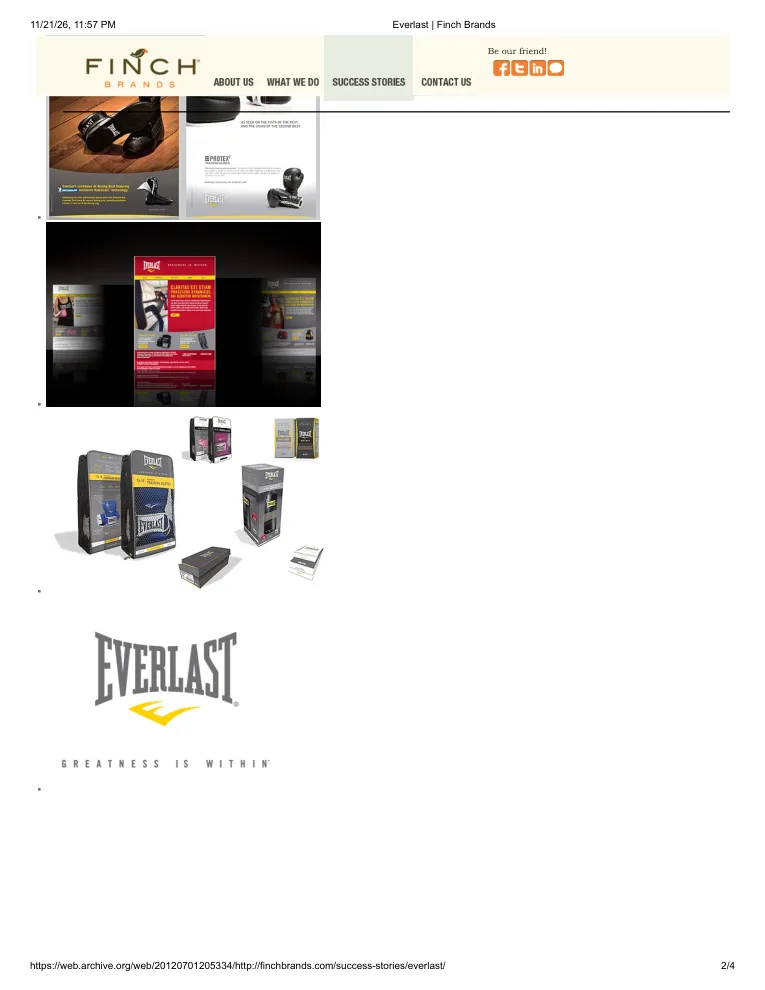

Fighting in a new century
Challenge
Everlast has been the preeminent brand in the world of boxing for the last 100 years. Faced with changing consumer tastes, distribution and licensing challenges, and pressure from major accounts like Dick’s Sporting Goods and Sports Authority, Everlast sought to develop a global brand strategy to unify and grow the business.
Solution
We guided Everlast through a literal “brand renaissance”, helping them evolve into a relevant athletic lifestyle brand based on the spirit – not just the physicality – of boxing that spoke to people at all levels of athletic pursuits and achievements. Finch Brands served the company in multiple capacities, from the Board level to developing the brand strategy to building common materials for licensees to serving as creative agency of record.
Results
Everlast enjoyed a 24% increase in net revenue parallel to the brand re-launch. When the company was sold later that same year, their market cap had more than tripled. The acquiring company attributed the brand’s newfound momentum a central reason for the sale and price.
Original published text presented in a clean reading layout. Archived page may contain historical navigation or reader comments.